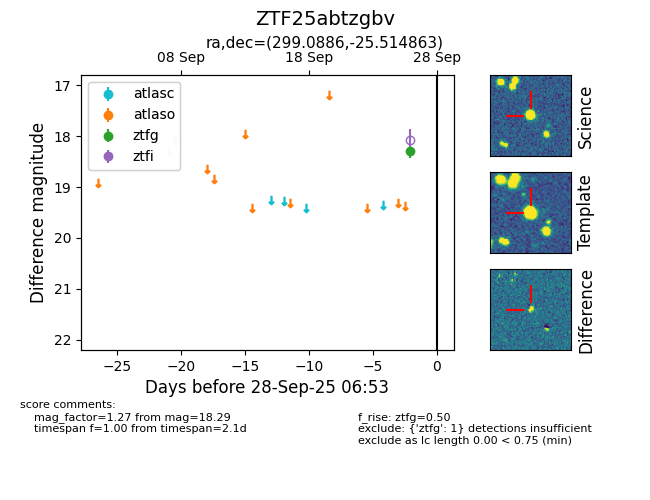

FINK: ZTF25abtzgbv
Lasair: ZTF25abtzgbv
ALeRCE: ZTF25abtzgbv
ZTF25abtzgbv (ztf,fink)
equatorial (ra, dec) = (299.0886,-25.51486)
galactic (l, b) = (15.7248,-24.89069)

last ztfg=18.29
1 ztfg detections